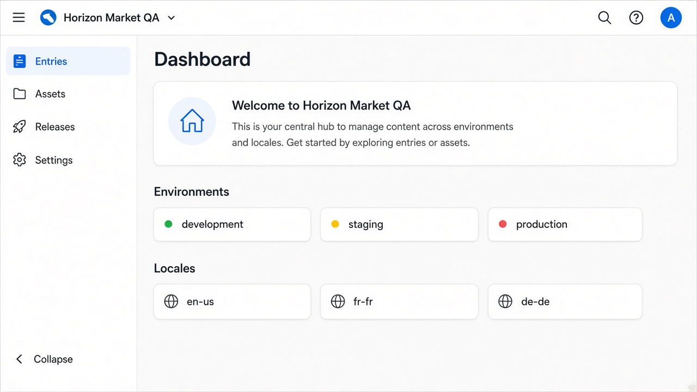

Training Summary — Contentstack QA Tester
Audience: QA testers joining a live Contentstack project
Duration: 4 days (2 concept + 2 lab) + first-sprint shadowing
Outcome: A tester who can accept content, prove it via API, and file defects that developers and editors can act on

---
Why QA on Contentstack is different
Contentstack is a headless CMS. Editors create structured content in the CMS. A separate website, app, or kiosk fetches JSON and renders it. There is no “CMS page preview equals the live site” unless the team built Live Preview.
QA therefore tests three layers, not one screen:
Editor action in Contentstack
↓
Published JSON on CDA / GraphQL (per environment + locale)
↓
Frontend / app rendering + cache + personalizationA bug can sit in any layer. Filing “homepage is blank” without checking environment, locale, publish status, and the Delivery API wastes a sprint.
Contentstack is the system of record for editorial content. It does not host the website, run checkout, authenticate site visitors, or own URL routing. Those belong to the app and infrastructure. Test them as integrations, not as CMS features.
---
What a QA tester owns on a real project
| Owns | Does not own |
|---|---|
| Content correctness vs acceptance criteria | Designing the content model (challenge it, do not invent it) |
| Workflow, role, and publish-rule enforcement | Creating management tokens or changing stack settings without approval |
| Environment promotion: draft → staging → production | Frontend architecture and hosting |
| Locale + fallback behaviour | Translation quality (linguistics owns copy; QA owns “wrong locale shown”) |
| Delivery API contract: fields, references, assets | Writing production CMA write scripts |
| Live Preview / Visual Builder vs published site | Building Live Preview SDK integration |
| Releases, scheduled publish, unpublish | CDN/WAF configuration (verify cache impact) |
| Regression when a content type or branch is merged | Schema design on branches (verify after merge) |
---
Skills you will have after this training
- Explain stack, content type, entry, asset, environment, locale, branch, and release.
- Author and validate a content type and entries for Horizon Market.
- Publish to one environment and prove another environment is unchanged.
- Call REST CDA and GraphQL CDA; use Preview API for drafts.
- Resolve references with
include[]and embedded RTE items withinclude_embedded_items[]. - Test fallback locales and non-localizable fields.
- Walk an entry through Draft → In Review → Approved → Published.
- Assemble a Release and verify atomic publish / unpublish.
- Write test cases and defects using the taxonomy in this pack.
- Run a campaign go-live checklist with editors and developers.
---
Syllabus
Day 1 — Foundations and authoring
| # | Module | Hours | Exit criteria |
|---|---|---|---|
| 01 | Headless CMS and Contentstack boundaries | 2 | Can draw the three-layer test model |
| 02 | Content model, authoring, environments | 4 | Can name field types and when to use Reference vs Modular Blocks |
| Lab 01–03 | Stack orientation, model + entry, publish | 2 | Entry visible on staging CDA, absent on production CDA |
Day 2 — APIs, preview, localization, releases
| # | Module | Hours | Exit criteria |
|---|---|---|---|
| 03 | APIs, preview, releases | 3 | Can choose CDA vs CMA vs Preview for a given check |
| 04 | QA strategy on real projects | 2 | Can write a content-change test plan |
| Lab 04–07 | CDA, workflow, locales, campaign Release | 3 | Localized campaign proven on staging API + site |
Day 3–4 — Hands-on project simulation
| # | Lab | Hours | Exit criteria |
|---|---|---|---|
| Lab 08 | Regression and defect writing | 3 | Five defects filed with layer + evidence |
| Capstone | Mini go-live of Horizon Market spring campaign | 4 | Checklist signed; no unpublished reference on production |
Use checklists/ during Days 3–4. On template UAT, use component and template QA issues (CS-CMP-01–41). Do not invent a new process on the first client project.
---
Contentstack building blocks (QA memory card)
| Primitive | What it is | QA implication |
|---|---|---|
| Organization | Company account | Users and SSO live here |
| Stack | One project / site family | Tokens, environments, and content types are per stack |
| Content type | Schema and API contract | Field UID changes break frontend and tests |
| Global field | Reusable field group | A change ripples across every type that uses it |
| Entry | One instance of a type | Versioned; publish is per environment and locale |
| Asset | File on CDN | Publishing an entry does not always publish a new asset |
| Environment | Publish destination + delivery token | Staging token never proves production |
| Locale | Language variant + fallback | Unlocalized entries inherit; localized ones do not |
| Workflow | Stages and publish rules | “Approved” is not the same as “published” |
| Release | Atomic set of publish/unpublish | Partial deploy or skipped items are defects |
| Branch | Parallel schema work | Test the merge, not only the feature branch |
| Webhook / Automate | Event out to CI, search, Slack | Failed webhook = stale site or stale index |
---
Token rules (never mix these)
| Token | Used for | Safe in frontend? |
|---|---|---|
| Delivery token | REST/GraphQL CDA — published content for one environment | Yes, if scoped correctly |
| Preview token | Preview API — drafts and Timeline | No (treat as secret) |
| Management token | CMA writes, workflows, releases | Never in browser or repo |
If a “site bug” only appears when someone used a management token in Postman, it is not a production CDA bug.
---
Real-world project shape
A typical Contentstack delivery QA will see:
- Kickoff — content model walkthrough, environments, locales, roles.
- Authoring UAT — editors create real entries; QA checks required fields, defaults, references, modular block order.
- Integration test — frontend wired to
developmentorstagingdelivery tokens. - Preview UAT — Live Preview / Visual Builder matches the app; draft ≠ published.
- Localization UAT — fallback, RTL if needed, date/currency formatting in the app (CMS stores strings).
- Release rehearsal — campaign Release on staging, then production window.
- Regression — schema change or branch merge; contract tests on CDA JSON.
- Hypercare — unpublish, rollback via versions, cache TTL, webhook rebuild time.
Horizon Market labs simulate items 2–7.
---
Definition of done for this training
A tester is project-ready when they can, without help:
- Create a
productandlanding_pageentry, attach an asset and a category reference, and publish only tostaging. - Show the JSON on staging CDA with references resolved, and show production CDA still missing that entry.
- Localize the product title to
fr-fr, leave SKU non-localized, and prove fallback forde-de. - Move the entry through workflow and show a reviewer-only user cannot publish to production.
- File one defect that includes: layer (CMS / API / app), environment, locale, entry UID, version, and a CDA response snippet.
---
Recommended official Academy path (optional)
Complete these after the labs if the project uses the matching feature:
- CMS Developer Foundations — boundaries and building blocks
- Content Modeling with Contentstack
- APIs and Developer Tooling
- Preview, Visual Builder, and Releases
- Workflow, Branches, and Collaboration
Academy is developer-leaning. This pack is the QA cut of the same platform.
---
Next step
Open modules/01-headless-cms-and-contentstack.md, then set up the sandbox in labs/00-lab-setup.md.